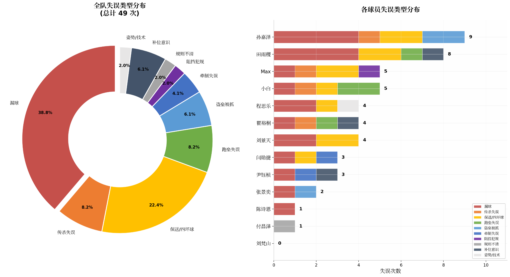

🤖 Kimi 分析
这是基于 U10天津Pony杯-数据统计 的深度数据分析报告，涵盖进攻、防守、投手表现、失误类型和球员画像。
🏆 核心发现
进攻端
| 指标 | 领跑者 | 数据 |
|---|---|---|
| OPS | 程思乐 | 1.50 |
| 安打率 | 张景奕 | .750 |
| 长打率 | 闫勋捷 | .830 |
| 上垒率 | 孙嘉泽 | .640 (7次保送) |
| 打点 | 程思乐 | 8分 |
| 得点 | Max / 付昌泽 | 5分 |
| 盗垒 | 闫勋捷 | 13次 |
| 本垒打 | 闫勋捷 | 1支 |
团队进攻数据：总打席151，团队安打率 .432，总得点27，总打点29，总盗垒94次。
⚠️ 防守端关键问题
全队失误类型分布（按备注统计）

左：全队失误类型分布（总计49次） | 右：各球员失误类型分布
| 失误类型 | 次数 | 涉及球员 |
|---|---|---|
| 漏球 | 19 | 全队普遍问题，田雨稷(4次)、孙嘉泽/程思乐/小白/张景奕均有 |
| 保送/四坏球 | 11 | 孙嘉泽(7次保送)、程思乐(连续保送3人)、刘景天/闫勋捷 |
| 传杀失误 | 3 | Max(2次)、闫勋捷 |
| 补位意识 | 3 | 瞿裕桐(2次没补本垒)、田雨稷 |
| 盗垒被抓 | 3 | 张景奕(3次：本垒/三垒/二垒各一次) |
| 规则不清 | 3 | 付昌泽(三振逃)、田雨稷(4坏不知道上垒)、小白(保送不知道上垒) |
| 跑垒失误 | 2 | 小白(不滑垒触杀)、瞿裕桐(减速) |
| 姿势/技术 | 1 | 程思乐(背着手垫脚尖) |
球员表现净得分（亮点 - 失误）
- 正值：无（全队防守压力较大）
- 接近平衡：闫勋捷(-1)、Max(-1)、瞿裕桐(-1)
- 需重点关注：孙嘉泽(-8)、田雨稷(-5)、程思乐(-3)、刘景天(-3)、小白(-3)
📈 投手衍生指标深度分析
基于投手原始数据（主投局数、投球数、好球、被安打、失分、保送、三振）计算的衍生指标，可以更直观地反映每位投手的控球能力、压制力与用球效率。
| 球员 | ERA | WHIP | K/BB | 每局用球 | K/9 | BB/9 |
|---|---|---|---|---|---|---|
| Max | 2.25 | 1.00 | 1.67 | 15.2 | 11.25 | 6.75 |
| 田雨稷 | 7.00 | 2.56 | 2.00 | 14.1 | 4.00 | 2.00 |
| 闫勋捷 | 12.72 | 2.30 | 1.29 | 20.8 | 14.31 | 11.13 |
| 孙嘉泽 | 22.13 | 5.74 | 0.44 | 26.5 | 9.84 | 22.13 |
| 瞿裕桐 | 0.00 | 2.00 | 0.00 | 17.0 | 0.00 | 18.00 |
| 刘景天 | 0.00 | 2.00 | 0.00 | 16.0 | 0.00 | 18.00 |
| 程思乐 | 81.82 | 9.09 | 0.00 | 48.5 | 0.00 | 54.55 |
🏆 投手球员画像
Max — 【最佳投手】ERA 2.25全队最低，WHIP 1.00每局仅1人上垒，好球率49%最高，4局仅被1安打。K/9 11.25三振能力极强。结论：控球精准、压制力最强、效率最高，应增加投球局数。
孙嘉泽 — 【控球崩溃】ERA 22.13灾难级，WHIP 5.74每局近6人上垒，9保送/3.66局，好球率仅34%，每局用球26.5个效率极低。结论：好球率需狠抓，目前不适合担任先发。
田雨稷 — 【球队王牌】主投9局占全队最高工作量，ERA 7.0可接受，每局用球14.1效率最高，BB/9仅2.0保送控制最好。结论：工作量过大需减压，稳定但缺乏支援。
闫勋捷 — 【三振王】K/9 14.31全队最高，三振9个最多，主投5.66局第二多。但ERA 12.72、BB/9 11.13保送过多导致失分。结论：夺三振能力强，但保送失控，关门角色需更稳定。
程思乐 — 【样本失真】0.33局失3分，ERA 81.82无意义。好球率31%。结论：样本过小，结合进攻数据（OPS 1.50全队最高），建议专注打击，投手角色谨慎使用。
瞿裕桐 / 刘景天 — 【待观察】各1局0失分，但2保送0三振，好球率23-25%。结论：样本过小，需更多比赛检验。
⚠️ 全队投手问题总结
| 问题 | 数据 | 说明 |
|---|---|---|
| 保送失控 | 全队27次保送 | 仅田雨稷(2次)和Max(3次)控制得当，孙嘉泽9次、闫勋捷7次 |
| 好球率偏低 | 均值约35% | 仅Max(49%)达标，孙嘉泽34%、程思乐31%严重不足 |
| 工作量不均 | 田+闫=14.66局 | 占全队63%，缺乏可靠第三投手分担 |
| 关门不稳 | 闫勋捷BB/9 11.13 | 有亮点但保送过多，Max仅4局样本不足 |
| 效率差异大 | 14.1球/局 vs 48.5球/局 | 田雨稷效率最高，程思乐因样本小失真 |
训练建议：狠抓孙嘉泽/闫勋捷的好球率训练，增加Max投球局数测试其稳定性，为田雨稷寻找可靠轮换投手减轻负担。
🆚 按对手团队表现
| 对手 | 总备注 | 失误 | 亮点 | 净得分 | 评价 |
|---|---|---|---|---|---|
| 小熊 | 4 | 2 | 1 | -1 | 表现最好，闫勋捷本垒打 |
| 奥熊 | 7 | 4 | 2 | -2 | Max双杀+0封是亮点 |
| 强棒 | 8 | 5 | 1 | -4 | Max双杀化解困难局面 |
| 北理工 | 7 | 6 | 1 | -5 | 闫勋捷关门连K两人 |
| 平野 | 13 | 9 | 2 | -7 | 首场比赛，失误较多 |
| 重庆 | 13 | 11 | 3 | -8 | 失误最多场次，但闫勋捷顶住压力关门成功 |
👤 13名球员个体画像
闫勋捷 — 【核心王牌】OPS 1.33全队第二，唯一本垒打，盗垒13次最多。关门投手表现亮眼（平野关门成功、北理工连K两人、重庆重压守住胜利），但游击/捕手有3次漏球/传杀失误。建议：巩固内野防守，保持投手信心。
张景奕 — 【高效打击】OPS 1.35第一，安打率.750（4打数3安打），盗垒9次。致命问题：被抓盗3次（本垒/三垒/二垒各一次），关键时刻送出局非常可惜。建议：打击天赋极高，需加强跑垒判断，减少盲目盗垒。
Max — 【全能战士】OPS 1.17，得点5分。防守贡献巨大：强棒双杀、奥熊双杀+0封两局。问题：三垒漏球、阻挡犯规、传杀一垒两次失误。建议：防守决策需更冷静，投补配合已是全队最佳。
孙嘉泽 — 【上垒机器】OPS 1.19，上垒率.640最高（7保送），盗垒10次。问题严重：投手极不稳定（奥熊先发一局被下6分，重庆连续保送），捕手漏球，偷本垒被抓导致输强棒1分非常可惜。建议：狠抓投手好球率，加强捕手防守，跑垒需更冷静。
程思乐 — 【打点王】打点8分最多，OPS 1.50全队最高（安打率.730/长打率.800）。问题：投手第5局连续保送3人造成被动；中外野重大失误（背着手垫脚尖）丢2分。建议：专注打击和中外野防守姿势矫正，投手角色需谨慎使用。
付昌泽 — 【长打威胁】OPS 1.09，3支二垒安打最多，长打率.660。问题：三振逃规则不清楚。建议：加强规则学习，保持长打优势。
田雨稷 — 【稳定投手】投手表现稳定，有连续K人实力。问题：游击/投手漏球较多（共4次），4坏球不知道上垒。建议：巩固防守基本功，加强规则意识。
刘景天 — 【进步中】安打率.370相比猛虎杯有提升。问题：投手连续保送、二垒两次漏球。建议：强化打击，投手控制好球率，二垒防守专注。
瞿裕桐 — 【防守亮点】右外接杀提振士气。问题：投手两次没补本垒，接杀后没传本垒导致失分，跑垒减速，三振率27.3%最高。建议：加强投手补位意识和跑垒态度，减少三振。
小白 — 【出勤标兵】相比猛虎杯进步大，训练出勤率高。问题：保送不知道上垒、盗垒不滑垒触杀、一垒传本垒慢、右外漏球。建议：加强基础规则学习和跑垒技术。
刘梵山 — 【样本小但高效】4打席2安打，安打率.500。建议：保持打击状态，增加比赛经验。
陈诗恩 — 【士气提振者】左外接杀特别提振士气。问题：二垒漏球1次。建议：样本量小，需更多比赛锻炼。
尹钰桢 — 【补位意识】补位投手漏球后传杀一垒抓出局，值得表扬。问题：防守二垒不上垒导致牵制失败。建议：样本量小，培养防守意识。
分析说明：数据只是记录，场上的局面可能更复杂，不能完全说明问题。针对性的认领问题即可，不过分解读，参与了就值得珍惜，并认真复盘总结比赛经验。